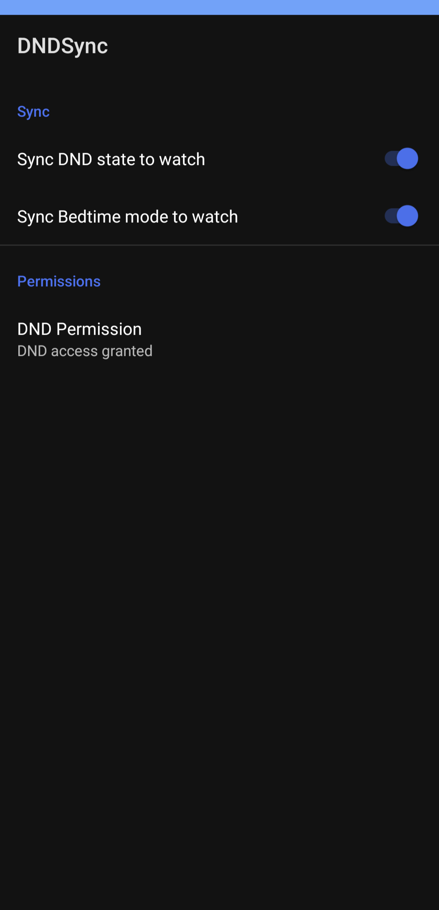
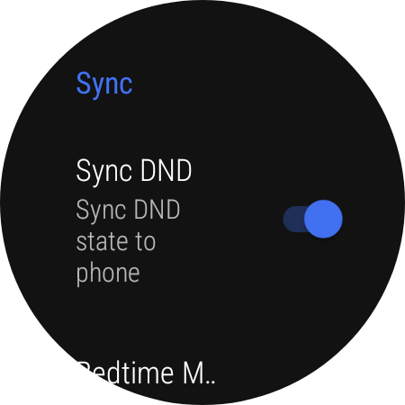
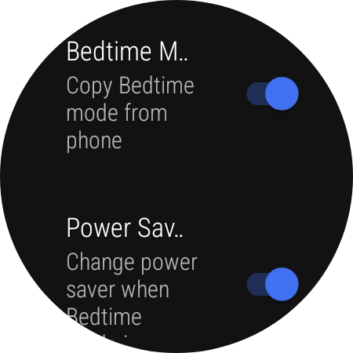
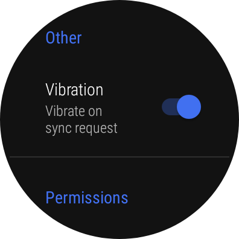
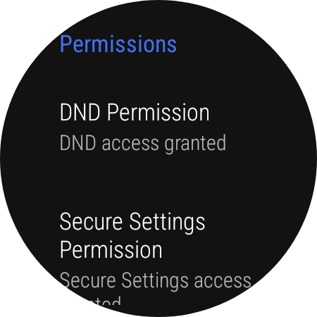

The Ecosystem Lock-in
Back in 2023, I bought my Galaxy Watch 4 Classic and started using it with my Pixel 7. It is a great piece of hardware, but I quickly realized that several essential quality-of-life features are artificially gated if you are not firmly planted inside the Samsung ecosystem.
One of the most frustrating missing features was the lack of synchronization between the Do Not Disturb (DND) and Bedtime mode on my phone and my watch. Having to toggle them separately every night felt incredibly tedious.
The Discovery & The Missing Feature
A quick Google search led me to an excellent open source app called dnd-sync by rhaeus. It was fabulous and solved the core issue by enabling sync capabilities via a companion app on both the phone and watch.
However, I found it was missing one highly specific feature: the ability to turn on Bedtime mode on my watch only when it was turned on via my phone.
In the original application, the only available option was to sync the DND mode globally and optionally bundle the watch's Bedtime mode along with it. I did not want them linked. I wanted a separate, dedicated option to sync Bedtime mode with the watch strictly when my phone's Bedtime mode was activated.
The Goal
- Achieve two-way sync for Do Not Disturb (DND).
- Implement a strict one-way sync (Mobile to Watch) for Bedtime Mode.
- Keep the triggers for both modes completely independent.
Building the Solution
Since the original app was not actively maintained by the developer anymore, I decided to fork it and add the functionality myself.
Figuring out Android's secure settings and background state listeners was far from easy. It took countless hours of reading documentation, debugging system logs, and sheer trial and error. Eventually, I managed to crack it and successfully integrated two separate options in the mobile companion app to independently sync DND and Bedtime mode.
Release Timeline & Updates
Since the initial fork, the project has grown with major rewrites, bug fixes, and awesome community contributions.
🚀 The Initial Fork
First public release. Added the separate toggle option to independently sync mobile Bedtime mode with the Galaxy Watch's Bedtime mode.
⚡ Performance Overhaul
Major Release. Instead of relying on Android's sluggish Accessibility Service to sync the phone's bedtime mode to the watch, the watch app now utilizes the WRITE_SECURE_SETTINGS permission. This allows it to directly modify the bedtime mode state on the watch OS level, making the sync significantly faster and more reliable. Also fixed a watch app crash bug.
🔋 Battery Saver Integration
Added a new feature allowing users to automatically toggle power saver mode on the watch whenever Bedtime mode is successfully synced from the mobile device.
⌚ Pixel Watch Expansion
Introduced experimental possible Bedtime mode sync for Pixel watches. Also merged a great PR by @TrianguloY that fixed synchronization issues that occurred after the watch reconnected to the phone.
🌍 Internationalization
More sync stability fixes after reconnections (thanks again, @TrianguloY). Rolled out string localization to determine bedtime status accurately across languages. Added German translation for bedtime mode (by @patheticpat) and French translation (by @guyaumetremblay). (Only required a mobile app update, no WearOS changes).
🌐 Universal Multilingual Bedtime Sync
The application now supports syncing Bedtime Mode across all languages globally, provided the phone uses Google's official Digital Wellbeing app to trigger Bedtime Mode.
⚠️ Important Notice for v2.4 Users
Due to a major package name change (now in.dreadedlama.dndsync), you cannot simply update from older versions.
You must completely uninstall the old app, reinstall v2.4, and re-grant all necessary permissions via ADB as outlined in the repository README.
The Final Outcome
Today, the app runs quietly in the background without draining battery life, thanks to the shift from Accessibility Services to direct secure settings. I can finally put my phone on Bedtime mode, and my watch instantly follows suit, without having to manually navigate menus or deal with arbitrary ecosystem restrictions.
Mobile Companion App

WearOS Companion App




Installation & Setup
Because this application interacts with system level states outside the standard Android API, it requires a brief setup process using ADB (Android Debug Bridge).
- Install the mobile app on your phone and the companion app on your WearOS watch.
- Use ADB to grant the required
WRITE_SECURE_SETTINGSpermission to the watch app. - Enable the notification listener service on your phone so the app can detect DND changes.
Full step-by-step instructions and ADB commands are available on the GitHub repository.
Credits
A massive thank you to the original developer, rhaeus, for laying the groundwork and creating such a fantastic base application. A portion of this project was also heavily inspired by blunden's work.
View Repository & Download